<title>ServoMap for iPhone</title>
<link rel="stylesheet" href="https://fonts.googleapis.com/css2?family=Shippori+Mincho:wght@500;600&display=swap">
<style>
/* Layout: a quiet contact sheet of real simulator screenshots, one short note each. */
:root {
  --bg: #F8F7F4;
  --ink: #2A2927;
  --ink-2: #5A5750;
  --ink-3: #6F6B63;
  --line: #D9D6CE;
  --font-serif: "Shippori Mincho", "New York", ui-serif, Georgia, serif;
  --font-sans: -apple-system, "SF Pro Text", system-ui, "Helvetica Neue", sans-serif;
}
@media (prefers-color-scheme: dark) {
  :root:not([data-theme="light"]) { --bg: #1A1A18; --ink: #E6E3DB; --ink-2: #ABA69B; --ink-3: #8F8A7F; --line: #3A3935; color-scheme: dark; }
}
:root[data-theme="dark"] { --bg: #1A1A18; --ink: #E6E3DB; --ink-2: #ABA69B; --ink-3: #8F8A7F; --line: #3A3935; color-scheme: dark; }

* { box-sizing: border-box; }
body { margin: 0; background: var(--bg); color: var(--ink); font-family: var(--font-sans); font-size: 15px; line-height: 1.6; -webkit-font-smoothing: antialiased; padding-inline: 20px; padding-block: 64px 96px; }
.page { max-width: 1100px; margin-inline: auto; display: grid; gap: 56px; }
h1, h2 { font-family: var(--font-serif); font-weight: 600; margin: 0; text-wrap: balance; }
h1 { font-size: clamp(30px, 5vw, 40px); line-height: 1.2; }
h2 { font-size: 20px; }
p { margin: 0; max-width: 38em; color: var(--ink-2); }
header { display: grid; gap: 14px; }
section { display: grid; gap: 20px; border-top: 1px solid var(--line); padding-top: 24px; }
.shots { display: grid; grid-template-columns: repeat(auto-fill, minmax(200px, 1fr)); gap: 36px 24px; }
figure { margin: 0; display: grid; gap: 10px; align-content: start; }
figure img { width: 100%; max-width: 100%; height: auto; border-radius: 28px; display: block; box-shadow: 0 0 0 1px var(--line); }
figcaption { font-size: 13px; color: var(--ink-2); line-height: 1.5; }
figcaption b { color: var(--ink); font-weight: 600; display: block; }
ul { margin: 0; padding-left: 1.1em; display: grid; gap: 6px; color: var(--ink-2); max-width: 44em; }
code { font-family: ui-monospace, "SF Mono", Menlo, monospace; font-size: 13px; }
</style>

<main class="page">
  <header>
    <h1>ServoMap for iPhone</h1>
    <p>These are screenshots of a working SwiftUI prototype running on the iOS 27 simulator with live prices from the ServoMap API, taken on 29 September 2026. Nothing here is drawn by hand: the map, the glass tab bar, the sheets, the forms and the widgets are the system&rsquo;s own.</p>
  </header>

  <section aria-labelledby="h-light">
    <h2 id="h-light">Light</h2>
    <div class="shots">
      <figure>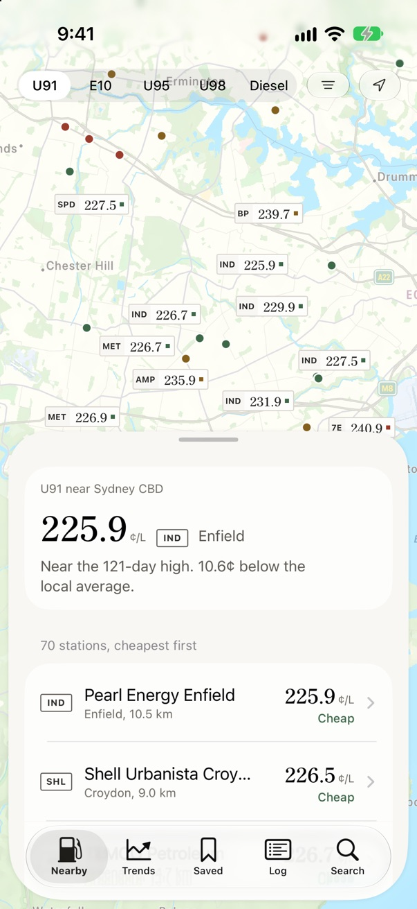<figcaption><b>Nearby</b>The cheapest stations are tagged on the map without overlapping; the sheet opens with the lowest price and where it sits against recent history.</figcaption></figure>
      <figure>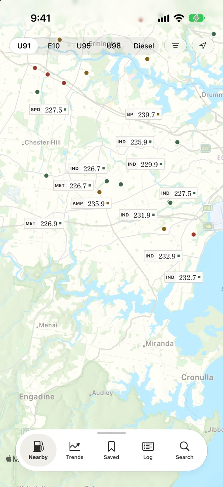<figcaption><b>Pulled down</b>As in Find My, the sheet folds to one floating glass bar with the tabs, and the map takes the whole screen.</figcaption></figure>
      <figure>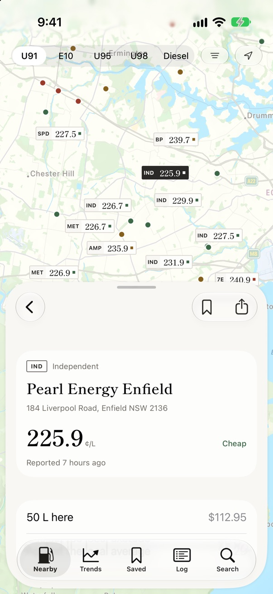<figcaption><b>Station</b>Pushed inside the sheet, so the map keeps its place. Shows what a full tank costs and logs a fill-up in one tap.</figcaption></figure>
      <figure>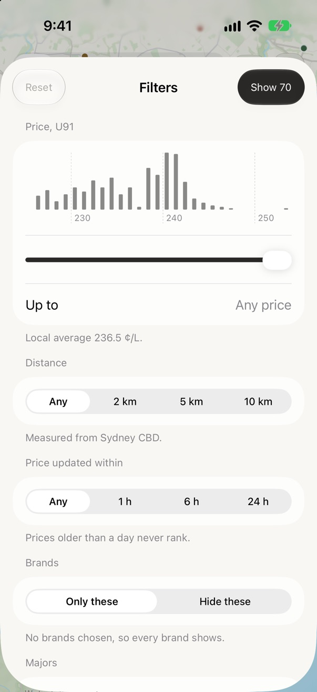<figcaption><b>Filters</b>A standard form with the data behind each choice: the price distribution, what each setting hides, every brand&rsquo;s count and average today.</figcaption></figure>
      <figure>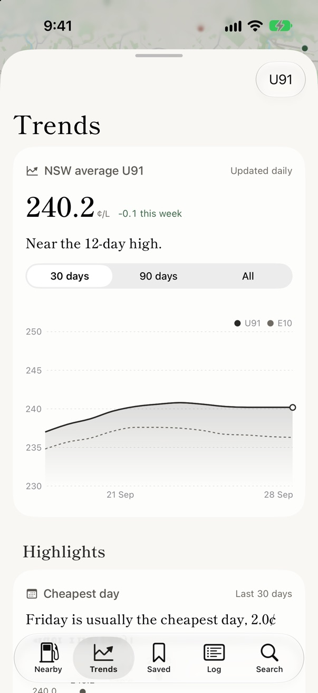<figcaption><b>Trends</b>Set out like Health: the state average with its week&rsquo;s change and history first, then highlight cards.</figcaption></figure>
      <figure>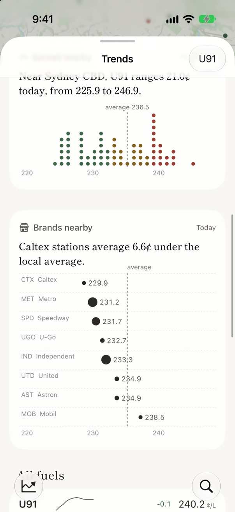<figcaption><b>Trends, highlights</b>Each card states one finding in a sentence and shows the data behind it. Scrolling folds the tab bar into one round button, with search on its own at the right.</figcaption></figure>
      <figure>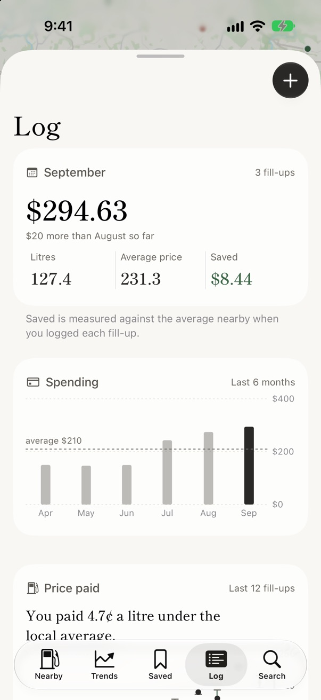<figcaption><b>Log</b>This month&rsquo;s spend against last month, then six months of spending with the average dashed.</figcaption></figure>
      <figure>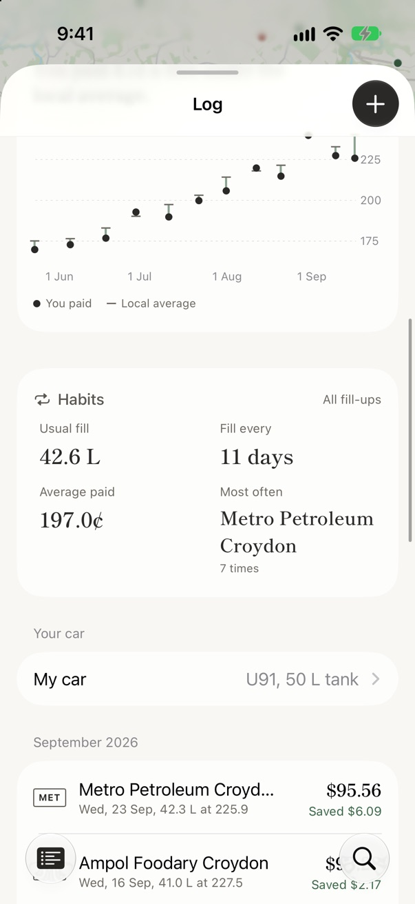<figcaption><b>Log, further down</b>Each fill-up&rsquo;s price with a stem to the local average at the time: green when you paid under it. Then habits: usual fill, how often, where.</figcaption></figure>
      <figure>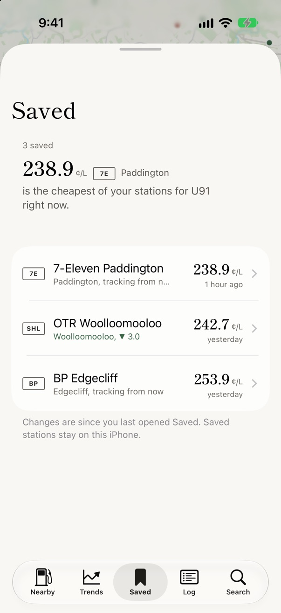<figcaption><b>Saved</b>Your stations cheapest first, and how each price moved since you last opened this tab.</figcaption></figure>
      <figure>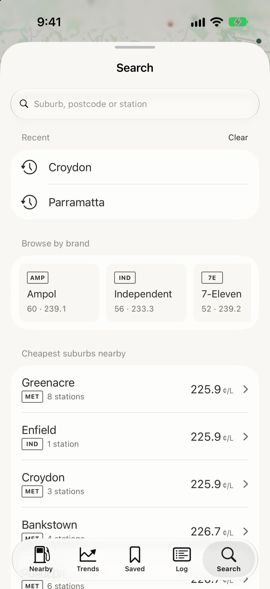<figcaption><b>Search</b>Before you type: recent searches, brands with their count and average, and the cheapest suburbs nearby.</figcaption></figure>
      <figure>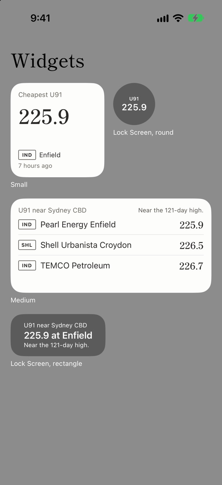<figcaption><b>Widgets</b>Small, medium and two Lock Screen sizes, each set to a fuel. Siri and Shortcuts answer &ldquo;cheapest U91&rdquo; with the same card.</figcaption></figure>
    </div>
  </section>

  <section aria-labelledby="h-dark">
    <h2 id="h-dark">Dark</h2>
    <div class="shots">
      <figure>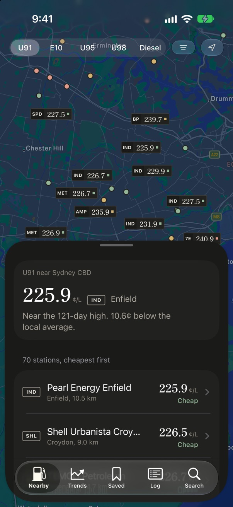<figcaption><b>Nearby</b></figcaption></figure>
      <figure>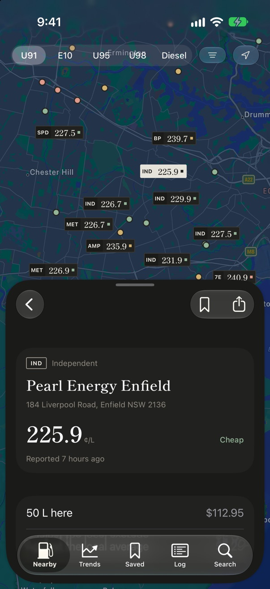<figcaption><b>Station</b></figcaption></figure>
      <figure>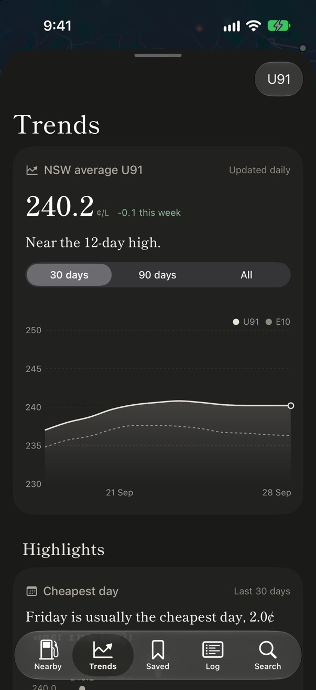<figcaption><b>Trends</b></figcaption></figure>
      <figure>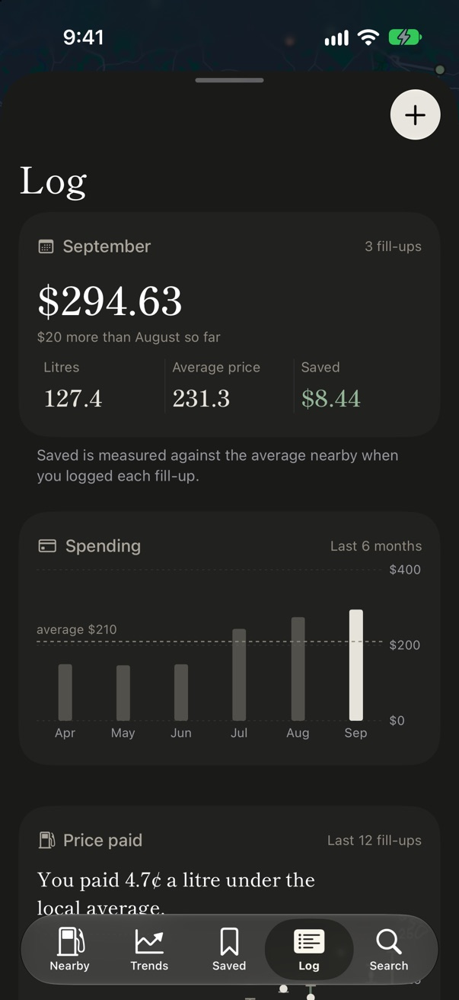<figcaption><b>Log</b></figcaption></figure>
    </div>
  </section>

  <section aria-labelledby="h-how">
    <h2 id="h-how">How it is put together</h2>
    <ul>
      <li>MapKit, the system map, with the muted style and points of interest hidden. It opens where you are, and refetches when you pan more than 2&nbsp;km.</li>
      <li>Shippori Mincho, the website&rsquo;s display face, for titles and prices, bundled and cut down to Latin; San Francisco for all other text. Both scale with Dynamic Type.</li>
      <li>iOS 27 Liquid Glass comes from the system: the tab bar inside the sheet (as in Find My), which folds to one round button when you scroll (as in Health), the toolbar buttons, the prominent buttons. The selected tab has a filled icon and a bold label; the colour stays ink.</li>
      <li>Colours, the type scale and the brand table are generated from the same sources as the website (<code>packages/design-tokens</code>, <code>packages/shared</code>).</li>
      <li>The code is in <code>apps/ios</code>; <code>xcodegen generate</code> creates the Xcode project. 31 tests cover filters, trend maths, tag placement, names, the log and its habits.</li>
    </ul>
  </section>

  <section aria-labelledby="h-next">
    <h2 id="h-next">Not in this prototype yet</h2>
    <ul>
      <li>Widgets and Siri use Sydney CBD; they don&rsquo;t read your location yet.</li>
      <li>Price alerts and &ldquo;on your way&rdquo; routes, which need new API endpoints.</li>
      <li>CarPlay.</li>
      <li>Queensland, until its data feed is connected.</li>
    </ul>
  </section>
</main>
